anchor

11 col, trim 57x58, outline 100%, busy 95%, dither 1%, contrast 43.74
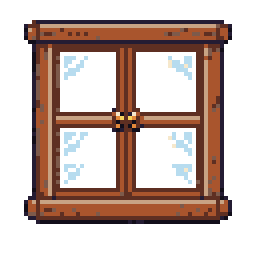
10 col, trim 52x51, outline 38%, busy 88%, dither 1%, contrast 51.28
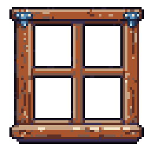
12 col, trim 57x58, outline 91%, busy 97%, dither 1%, contrast 51.72
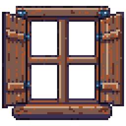
11 col, trim 62x58, outline 75%, busy 96%, dither 1%, contrast 40.30
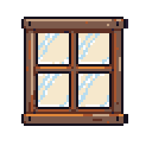
9 col, trim 45x46, outline 63%, busy 80%, dither 0%, contrast 82.17
9 col, trim 31x49, outline 89%, busy 84%, dither 0%, contrast 79.16
9 col, trim 39x47, outline 83%, busy 91%, dither 0%, contrast 78.05
11 col, trim 45x59, outline 100%, busy 88%, dither 0%, contrast 73.45
14 col, trim 44x53, outline 84%, busy 94%, dither 1%, contrast 70.51
7 col, trim 42x33, outline 99%, busy 84%, dither 1%, contrast 62.67
10 col, trim 46x32, outline 98%, busy 85%, dither 1%, contrast 60.14
10 col, trim 47x34, outline 83%, busy 88%, dither 1%, contrast 55.11
14 col, trim 56x47, outline 95%, busy 81%, dither 0%, contrast 55.06
6 col, trim 44x32, outline 99%, busy 85%, dither 0%, contrast 59.35
14 col, trim 36x49, outline 69%, busy 80%, dither 1%, contrast 76.19
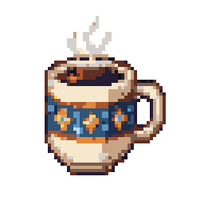
16 col, trim 38x50, outline 37%, busy 84%, dither 0%, contrast 72.45
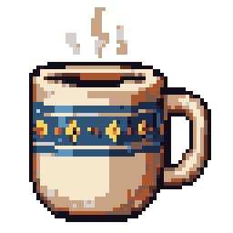
15 col, trim 50x59, outline 74%, busy 77%, dither 0%, contrast 78.31
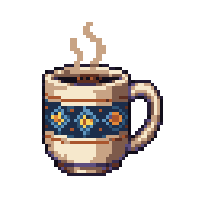
14 col, trim 38x48, outline 74%, busy 86%, dither 1%, contrast 73.59
15 col, trim 40x60, outline 100%, busy 92%, dither 1%, contrast 42.31
14 col, trim 44x58, outline 56%, busy 87%, dither 0%, contrast 47.71
16 col, trim 57x60, outline 100%, busy 94%, dither 0%, contrast 53.56
15 col, trim 59x63, outline 70%, busy 97%, dither 1%, contrast 51.02
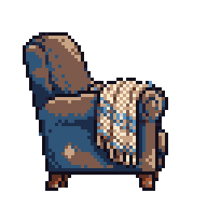
11 col, trim 45x49, outline 93%, busy 84%, dither 3%, contrast 55.21
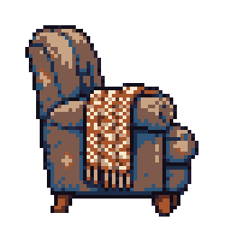
9 col, trim 48x53, outline 97%, busy 89%, dither 2%, contrast 52.28
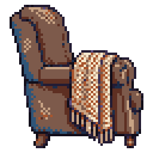
11 col, trim 56x60, outline 98%, busy 83%, dither 4%, contrast 52.35
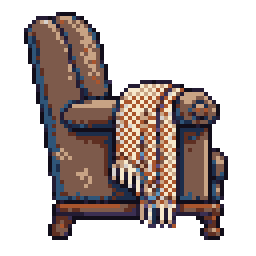
13 col, trim 51x57, outline 94%, busy 87%, dither 4%, contrast 58.87
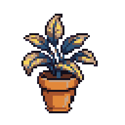
10 col, trim 39x51, outline 89%, busy 94%, dither 0%, contrast 61.65
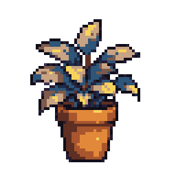
11 col, trim 40x52, outline 89%, busy 89%, dither 1%, contrast 59.82
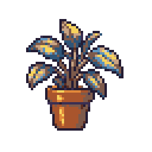
12 col, trim 41x47, outline 82%, busy 94%, dither 0%, contrast 51.48
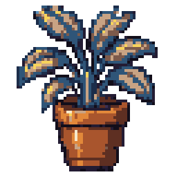
14 col, trim 51x60, outline 60%, busy 90%, dither 0%, contrast 49.32
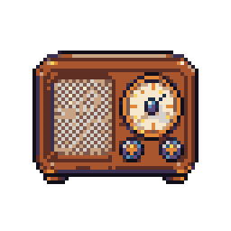
15 col, trim 46x37, outline 95%, busy 96%, dither 7%, contrast 61.79
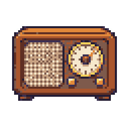
9 col, trim 52x37, outline 94%, busy 95%, dither 8%, contrast 59.97
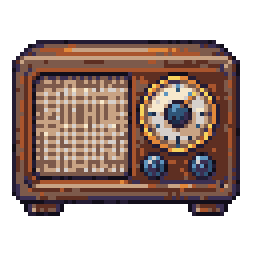
15 col, trim 57x44, outline 100%, busy 98%, dither 5%, contrast 56.88
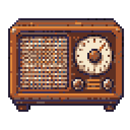
11 col, trim 57x46, outline 98%, busy 96%, dither 4%, contrast 56.18
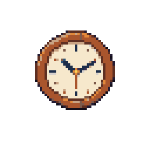
13 col, trim 34x34, outline 63%, busy 70%, dither 0%, contrast 77.84
9 col, trim 41x39, outline 98%, busy 69%, dither 0%, contrast 81.41
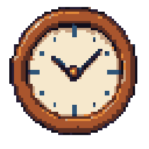
14 col, trim 55x55, outline 92%, busy 62%, dither 0%, contrast 81.77
11 col, trim 46x44, outline 97%, busy 76%, dither 1%, contrast 75.89
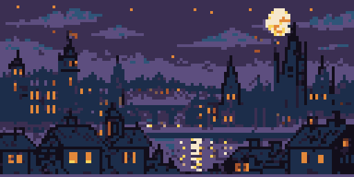
14 col, trim 128x64, outline -, busy 64%, dither 1%, contrast 30.65
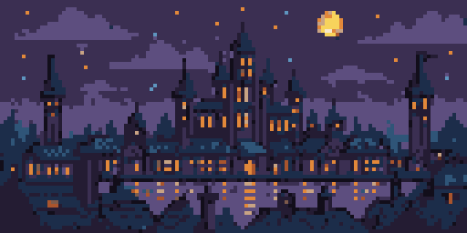
14 col, trim 128x64, outline -, busy 60%, dither 1%, contrast 25.49
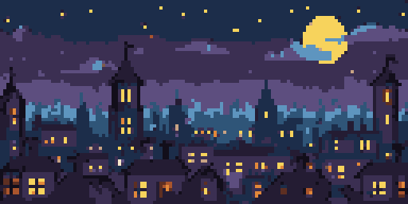
14 col, trim 128x64, outline -, busy 55%, dither 1%, contrast 36.27
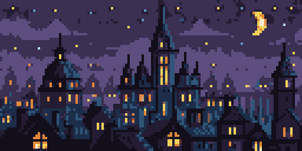
15 col, trim 128x64, outline -, busy 61%, dither 1%, contrast 32.74
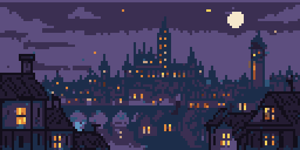
14 col, trim 128x64, outline -, busy 62%, dither 1%, contrast 28.54